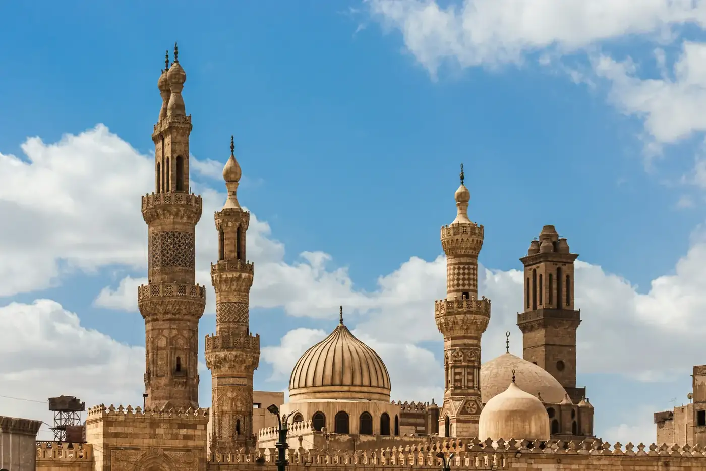

Jalur 1 · Kuliah S1
Kuliah S1 di Universitas Al-Azhar Kairo
Kami menemani lulusan SMA, MA, dan pesantren dari memilih fakultas, menyiapkan bahasa Arab, sampai resmi tercatat sebagai mahasiswa di kampus Islam tertua di dunia.

Untuk siapa program ini
Program ini terbuka untuk putra (banin) dan putri (banat). Belum mahir bahasa Arab bukan halangan, karena ada tes penempatan dan kelas bahasa sebelum seleksi.
Syarat dasar
- Muslim atau muslimah
- Lulusan MA, SMA, atau sederajat
- Memiliki paspor yang berlaku minimal 18 bulan
- Mendapat rekomendasi Kemenag daerah
Pelajar yang sudah berada di Mesir mengikuti alur yang sedikit berbeda. Bagian alur di bawah menjelaskannya.
Fakultas dan jurusan yang bisa dituju
Pilihan fakultas mengikuti ketentuan resmi Al-Azhar dan dapat berubah sesuai kebijakan universitas.
Putra (banin)
- Ushuluddin
- Aqidah dan filsafat, hadis dan ulumul hadis, dakwah dan filsafat.
- Syariah wal Qanun
- Syariah wal qanun dan syariah islamiyyah.
- Bahasa Arab
- Lughah arabiyah dan adab, serta tarikh wal hadarah.
- Dirasat Islamiyah
- Dirasat islamiyyah wal arabiyyah.
- Dakwah Islamiyah
- Dakwah islamiyyah, dan jurusan lain sesuai pembukaan tahun berjalan.
Putri (banat)
- Dirasat Islamiyah wal Arabiyah
- Jurusan ushuluddin, syariah islamiyyah, dan bahasa Arab.
Alur pendaftaran jalur kuliah
Delapan tahap bagi pelajar yang berangkat dari Indonesia. Seluruhnya didampingi tim kami, dan setiap tahap tercatat sehingga keluarga selalu tahu posisi pendaftaran.
-
Formulir pendaftaran
Isi formulir lewat tautan resmi Hamasah, lalu unggah pindaian dokumen yang diminta.
-
Verifikasi dokumen
Berkas kami periksa lebih dulu, lalu diteruskan untuk diverifikasi Markaz Tatwir Al-Azhar.
-
Hasil seleksi administrasi
Hasil verifikasi berkas diumumkan sebelum masuk ke tahap ujian.
-
Tahdid Mustawa
Ujian penempatan bahasa Arab yang menentukan level Anda, dari Mubtadi sampai Mutaqaddim.
-
Kelas bahasa
Jenjang bahasa diselesaikan sampai tingkat Mutaqaddim Awal sesuai hasil penempatan.
-
Karantina daring
Dauroh Ta'hili sekitar 30 hari dari Markaz Tatwir sebagai bekal menghadapi ujian.
-
Ujian seleksi
Ujian muadalah untuk penyetaraan ijazah. Hasilnya diumumkan sekitar dua minggu kemudian.
-
Pemberkasan dan daftar ulang
Pemberkasan akhir, keberangkatan ke Kairo, dan daftar ulang di fakultas masing-masing.
Tahdid Mustawa dan kelas bahasa
Tahdid Mustawa adalah tes kemampuan bahasa Arab yang menentukan titik mulai Anda. Hasilnya menentukan apakah perlu kelas bahasa dulu, atau bisa langsung ikut Dauroh Ta'hili.
- Mubtadi awal, mubtadi tsani, dan mutawasith awal: menyelesaikan kelas bahasa dulu
- Mutawasith tsani dan mutaqaddim awal: sudah memenuhi syarat minimal Dauroh Ta'hili
- Mutaqaddim tsani: dapat memperoleh ifadah najah sesuai syarat dan ketentuan
Kuncinya bahasa Arab dan Al-Qur'an. Baca Tips lulus tes Universitas Al-Azhar Kairo.
Enam level bahasa
- Mubtadi
- Mutawasith
- Mutaqaddim
Tiap tingkat terbagi dua, awal dan tsani, sehingga seluruhnya ada enam level.
Dauroh Ta'hili
Kelas karantina daring sekitar 30 hari dari Markaz Tatwir sebagai bekal menghadapi ujian muadalah. Kelulusan muadalah berarti ijazah Anda layak disetarakan dan pendidikan bisa dilanjutkan di Universitas Al-Azhar.
Dokumen yang disiapkan
Untuk mendaftar cukup pindaian dua dokumen. Dokumen asli baru dibutuhkan setelah Anda lulus seleksi, dan kami pandu satu per satu.
Untuk mendaftar (pindaian)
- Ijazah MA atau sekolah sederajat
- Paspor atau KTP yang masih berlaku
Setelah lulus seleksi (asli)
- Ijazah asli MA atau sederajat
- Akta kelahiran asli
- Paspor asli, berlaku minimal 18 bulan
- Surat izin orang tua atau wali bermeterai
- Pasfoto berwarna 4x6
- Surat rekomendasi Kemenag daerah
- Surat keterangan sehat berupa hasil tes darah (tahlil dam)
Rincian setiap tahap ada di artikel Tahapan seleksi S1 Universitas Al-Azhar Kairo.
Rincian biaya jalur kuliah
Estimasi tahun akademik 2026/2027. Pembayaran dilakukan bertahap, mengikuti tahap yang sedang berjalan.
Berangkat dari Indonesia
- Pendaftaran, verifikasi dokumen, dan Tahdid Mustawa
- Rp 1.100.000
- Karantina daring bersama Al-Azhar dan ujian muadalah
- Rp 2.800.000
- Keberangkatan ke Kairo, program asrama
- Rp 20.000.000
- Keberangkatan ke Kairo, program non-asrama
- Rp 18.500.000
Sudah berada di Mesir
- Pendaftaran dan verifikasi dokumen
- Rp 500.000
- Karantina daring bersama Al-Azhar dan ujian muadalah
- Rp 2.800.000
- Pemberkasan dan administrasi kuliah
- Rp 5.000.000
- Biaya bersifat estimasi dan dapat berubah mengikuti regulasi Al-Azhar serta kebijakan pemerintah Mesir dan Indonesia.
- Biaya pendaftaran dan verifikasi dokumen tidak dapat ditarik kembali.
Konsultasi gratis sebelum mendaftar
Kirim data singkat, lalu tim kami menghubungi Anda untuk membahas fakultas, kesiapan bahasa, dan jadwal keberangkatan.